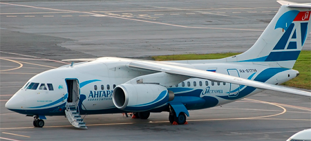

Комплексный тренажер
Комплексный тренажер Ан-148 («КТС Ан-148») разработан и построен российской компанией ЗАО «Транзас» (Санкт-Петербург) по заказу лизинговой компании ОАО «Ильюшин Финанс Ко.»
Это первый в России тренажер отечественного производства, соответствующий уровню «D» - наивысшему уроню классификации авиационных тренажеров по международным стандартам, позволяющий осуществлять подготовку летного персонала без тренировок на реальном самолете.


Комплексный (Full Flight Simulator - FFS) тренажер - это пилотажный тренажер, который имеет систему подвижности, имитирующую полет самолета, оборудован кабиной полностью соответствующей кабине пилотов реального воздушного судна, имеет совершенную систему визуализации и предназначен для отработки комплексных навыков выполнения полетов.
Тренажер аварийно-спасательной подготовки
Ежегодная аварийно-спасательная подготовка проводится на базе макета воздушного судна Ан-148.
Отрабатываются навыки оперирования дверью (door training); slide training, CEET (cabin emergency evacuation training) - проведение аварийно спасательной эвакуации с использованием аварийно-спасательного оборудования.
Водная аварийно-спасательная подготовка проводится в специально оборудованном бассейне на базе Учебного Центра С7 Тренинг – отработка навыков оказание помощи людям в воде, выживания в водном пространстве, приемов сохранения тепла и энергии.
Неотъемлемая часть аварийно-спасательной подготовки – совместные тренинги кабинных и летных экипажей - отработка взаимодействия между пилотами и бортпроводниками. Во время тренингов отрабатываются навыки самостоятельного принятия решений: что делать, если летный экипаж вышел из строя полностью или частично, как самостоятельно проводить эвакуацию, что делать в условиях автономного выживания, групповое и индивидуальное выживание в неизвестной и малоизвестной климато-географической местности (Арктика, пустыня, тропики, джунгли, водное пространство)
Практическое обучение проводится в специализированных классах, занятия по медицине проводятся на профильных тренажерах. Преподаватели в области подготовки кабинных экипажей - сертифицированные специалисты-практики.
Обучение
О самолете
Ан-148 — ближнемагистральный пассажирский самолёт, рассчитанный на перевозку от 68 до 85 пассажиров. Разработан в ОКБ им. О.К. Антонова. Производится на Воронежском акционерном самолётостроительном заводе и Киевском заводе Авиант.
Максимальная дальность полёта:
— 4400 км, с 75 пассажирами (Ан-148-100Е);
— до 7000 км, с установкой дополнительных топливных баков (Ан-168).
Крейсерская скорость — 820–870 км/ч.
В России продажей, поставками в финансовый и операционный лизинг этих самолётов занимается лизинговая компания Ильюшин Финанс Ко (ОАО "ИФК"). Сертификат типа самолёта выдан Авиарегистром МАК 26 февраля 2007 года и сертифицирован по нормам АП-25 и CS-25.
Адрес: Рублево-Успенское шоссе д.6
Тел./факс: +7 (495) 710-99-60 Доб. 335